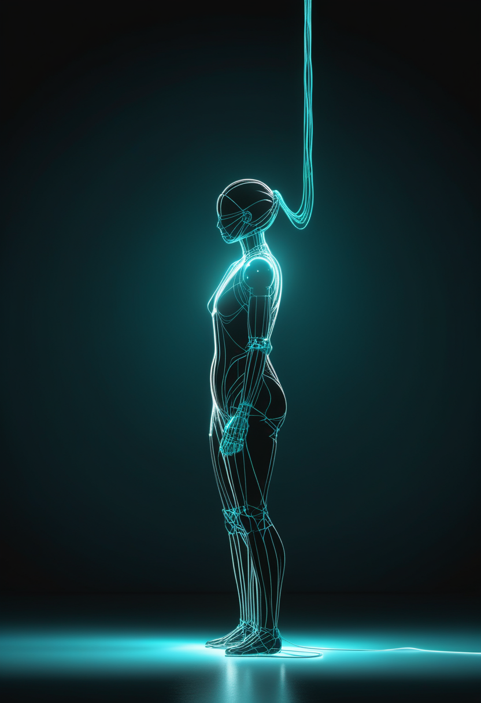
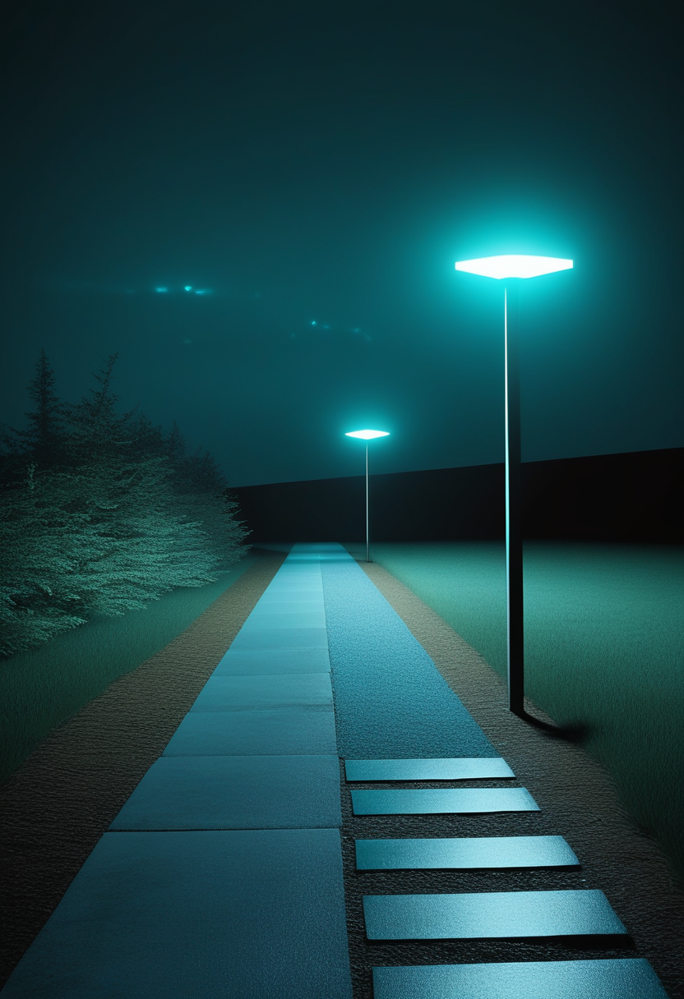
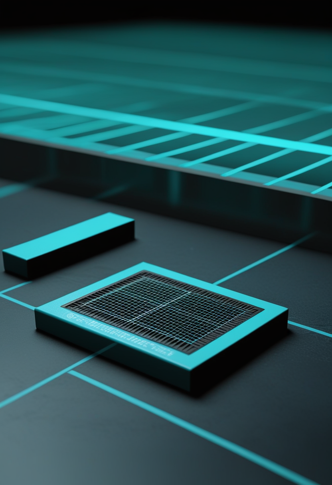
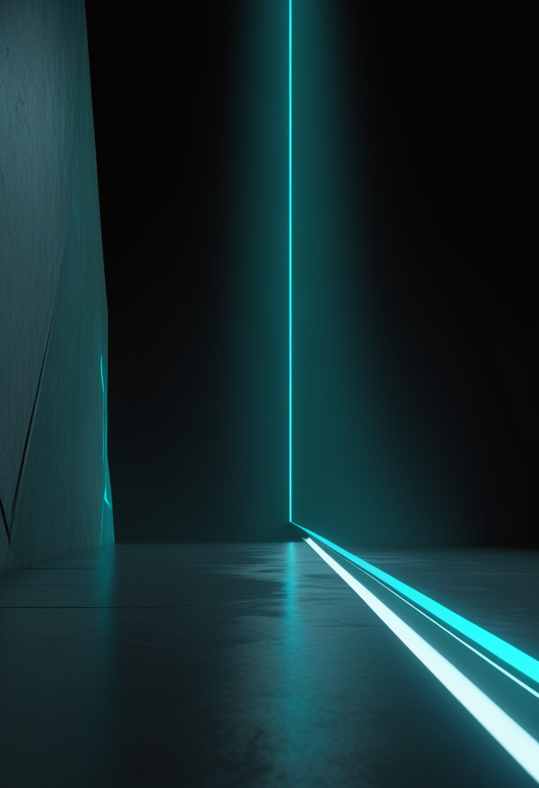
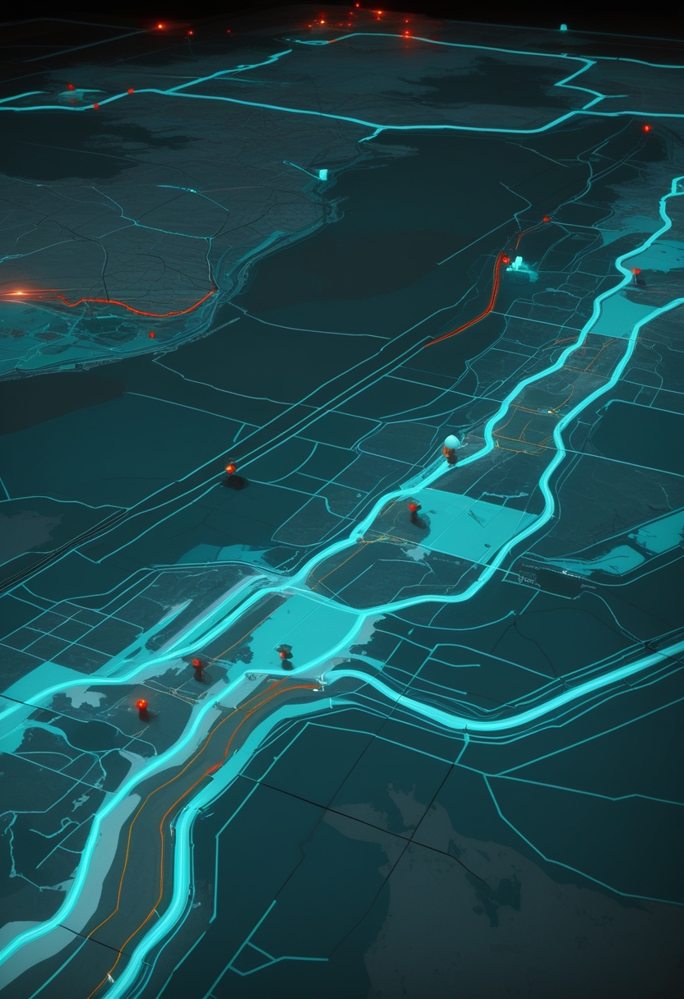
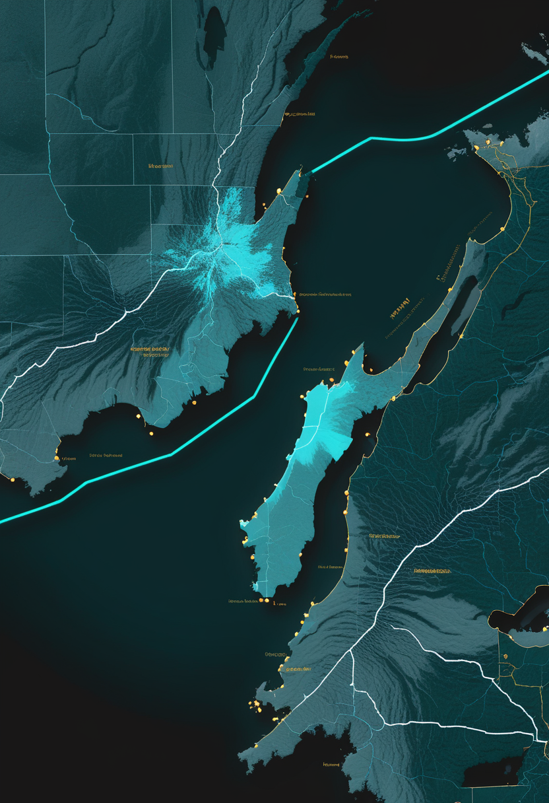
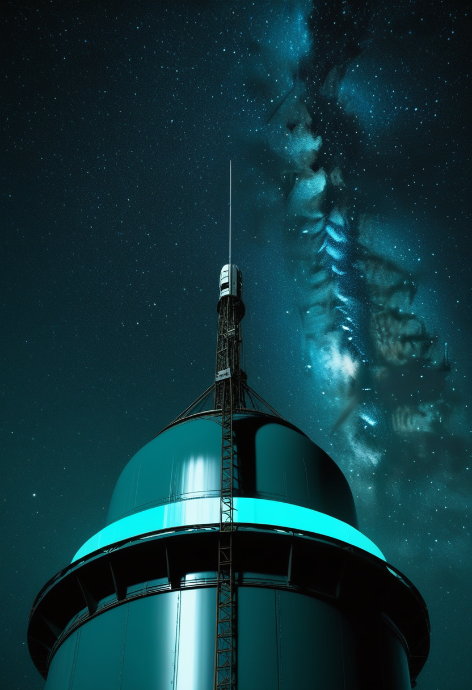
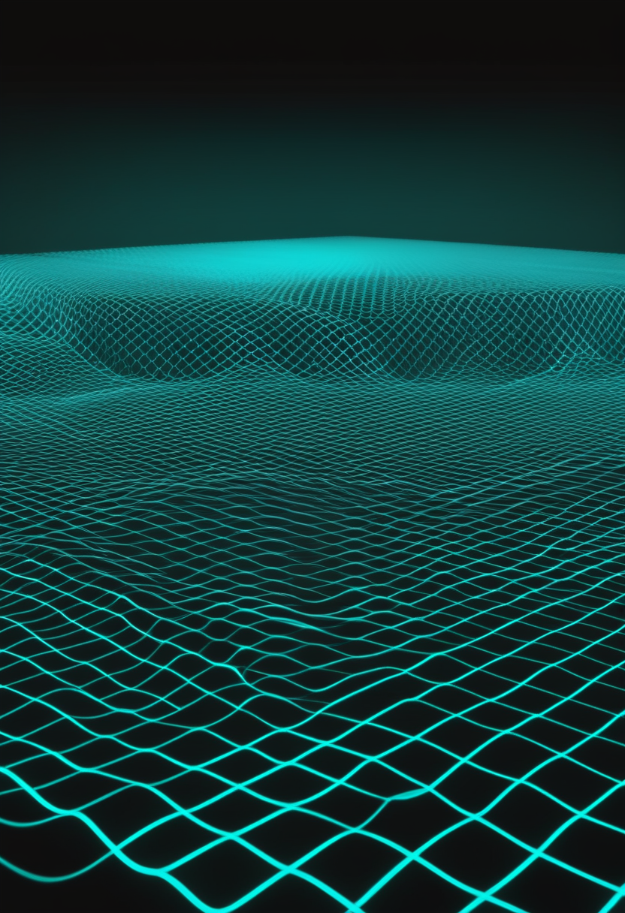

月曜日の便り。WHOが疾病発生情報(DON618)で、DRCのブンディブギョ型エボラの集計時点を9月23日と確定し、致死率を48.1%に訂正した。総数の伸びは1日数十例に落ち着く一方、北キブ州では直近21日間で症例が73%増え、致死率は約6割に達している。震源地イトゥリから北キブへ、流行の重さの中心が動いた号である。命の章は、ドイツの全国調査とオーストラリアのコホート研究を通じて、SMAの心理的負担と早期発見の効果を並べる。自由の章は、中国の埋め込み型BCI『北脳一号』が2027年初めの承認申請に近づいたことと、ピボタル試験設計をめぐる学会の議論を伝える。基盤の章は上のエボラのほか、インフルエンザ注意報が埼玉・大分にも広がったことを届ける。畏敬の章は、中国天眼FASTの世界最大の中性水素銀河カタログ、デューク大学の量子シミュレータによる『弦の切断』観測、NASAのCrew-13の10月1日打ち上げを並べる。美の章は、AIの意識をめぐるNed Block氏の懐疑論と、神経生理学からの反論という、噛み合わない二つの声を届ける。
前号(9/27号)は、WHOが伝えた確定7,890例・死亡3,799人という数字の集計時点が9月23日か24日か、要確認としていた。WHOの一次文書、疾病発生情報(Disease Outbreak News)第618号で、時点は9月23日と確認できた。致死率も、本紙計算の約48.2%からWHO公式の48.1%(3,799÷7,890=48.15%)に訂正する。影響を受ける保健区は7州63か所に拡大した。ここで注目すべきは、流行の重心の移動である。直近21日間で、最大の流行地イトゥリ州は約26%減、オー・ウエレ州は約15%減った一方、北キブ州は約73%増えた。北キブは34保健区のうち16区で1,480例・884人が報告され、致死率は約60%(884÷1,480=59.7%、本紙計算)と全国平均の48.1%を大きく上回る。WHOは次の疫学更新を本日9月28日に公表するとしている。

Orphanet Journal of Rare Diseasesに2026年、ドイツのSMA登録から参加者を募った全国調査の結果が掲載された。心理症状がみられたのは、子ども(21人、SDQで評価)の9.5%、成人(82人、Mini-SCLで評価)の13.4%、介護者(67人)の14.9%で、介護者では特にSMA 1型の人を介護する場合に目立った。症状は情緒の問題・抑うつ・不安といった内向きのものが中心で、患者と介護者の症状には相関があった。著者らは、定期的な心理スクリーニングと、患者・介護者双方への心理社会的ケアの統合を提言している。調査は2021年6〜9月に行われており、ISEMBYLDなど新薬登場前のデータである点に注意。

オーストラリアの研究チームは、新生児スクリーニング(NBS)または通常の臨床紹介(CR)を通じてSMAと診断され治療を受けた4〜12歳の子ども39人(NBS 18人・CR 21人、治療期間の中央値67.3か月)を対象に、学齢期の適応機能を調べる非無作為化コホート研究を行った。評価尺度PEDI-CAT(小児能力評価インベントリー・コンピュータ適応型検査)では、同年代の典型域に入った割合が、社会・認知97%(38/39人)、責任90%(35/39人)、日常活動74%(29/39人)、移動41%(16/39人)だった。診断経路による差は大きく、4領域すべてで典型域に入った子どもの割合はNBS群78%(14/18人)に対しCR群はわずか10%(2/21人)で、オッズ比33.25(95%信頼区間4.90〜167.40、p<0.001)。掲載誌の表記は情報源により一致せず要確認(PubMed 42100011)。早期発見・早期治療が運動機能だけでなく学校生活での自立度も左右することを裏づける結果である。
ドイツの調査は、薬が効いても心のケアは別立てで要ることを示し、豪州のコホートは、同じ治療を受けても『いつ見つかったか』が学校生活の自立度まで分けることを示す。治療の量だけでなく、届くタイミングと届いた後の支えが、次の課題として揃って浮かぶ。
北京脳科学・類脳研究所が育成した芯智達(NeuCyber)の「北脳一号」は、100チャネルを超える高スループットの無線・全埋め込み型の半侵襲BCIである。9月14日の報道によると、人への埋め込みは40例を超え、2027年初めに医療機器登録証を申請する見込み。6月中旬時点では27例・最長15か月超で安全性と安定性を保っていたとされ、この3か月で10例以上増えた計算になる(本紙の見方)。512チャネルで脳組織に電極を刺して単一神経細胞の活動を記録する「北脳二号」は、大型動物での試験段階にあり、2026年内の臨床検証開始を計画している。前号までに伝えた上海のNEO(3月承認)に続き、北京勢も承認申請の段階に近づいた。

Journal of Neural Engineeringに9月11日、第11回BCI学会(2025年)のワークショップをまとめた論文「Brain–computer interface clinical trial design considerations and clinical outcome assessments in pivotal studies」が掲載された。埋め込み型BCIが承認を得るための本格的な試験(ピボタル試験)で、何を主要評価項目とし、患者にとって意味のある改善をどう測るかという論点を整理している。前号で伝えたSynchronのピボタル試験準備や、Paradromicsの「家族と話せるか」という成果を、規制当局が受け入れる評価指標に翻訳する作業にあたる。本文の詳細は本実行環境から取得できなかった。

視線入力で意思疎通を支える機器の大手Tobii Dynavoxは、2026年夏に意思伝達ソフト「TD Snap」とブラウザ「TD Browse」の更新、小規模なハードウェア更新を公表した。2026年第1四半期の売上高は前年同期比15%増(為替などを除く実質成長11%)、営業利益(EBIT)は56%増だった。BCIが臨床の段階に進む一方、ALSなどで眼球運動が残る人にとっては、視線入力が現在も最も身近な意思伝達手段である。直近1〜2週の新規一次情報ではない。
中国では上海のNEOが承認済み、北京の北脳一号が2027年初めに申請という『複数の承認候補』の段階に入った。米国側はピボタル試験の評価指標づくりが課題で、承認の速さでは中国が先行している。視線入力は臨床の外側で、いまも変わらず最も身近な意思伝達の手段であり続けている。

WHOのDON618によると、9月11日の前回の発生情報以降、流行は北西部の新たな州・南ウバンギ州のブル保健区と、南スーダンと接するオー・ウエレ州のドゥング保健区の2つに広がった。影響を受けるのはバ・ウエレ、オー・ウエレ、イトゥリ、北キブ、南キブ、南ウバンギ、チョポの7州63保健区。9月23日時点の累計は確定7,890例・死亡3,799人で、WHOの算出する粗致死率は48.1%(3,799÷7,890=48.15%、本紙検算)。WHOは、地理的な拡大で国境を越えた感染のリスクが高まったとしている。次の疫学更新は本日9月28日に公表される予定。

埼玉県は9月25日、第38週(9月14〜20日)に県内172医療機関から2,333人の報告があり、定点当たり13.56人と注意報基準の10人を超えたとして、今季初の「インフルエンザ流行注意報」を発令した。前年より約1か月早い。大分県は同日、県全体の定点当たりが5.93人で前週の1.5倍を超え、保健所別では大分市が10.53人で注意報レベルを上回ったと発表した。前号までに伝えた東京都・千葉県・富山県に続き、東日本から九州まで早期流行が広がっている。厚生労働省の全国の第38週値は、本号でも取得できなかった(第37週は5.54)。
エボラの伸び自体は1日数十例に落ち着いたが、地理は7州63保健区へと広がり続けている。国内のインフルエンザ注意報は関東から九州、そして北陸へと、地図の上で確実に面を広げている。数の落ち着きと、地図の広がりは別の指標であることを、両方とも見ておきたい。
中国科学院国家天文台の姜鵬研究員のチームは、中国天眼FASTの中性水素巡天(FASHI)の第2期データ(DR2)を公開した。2年間の観測で河外の中性水素源156,411個を検出し、第1期の41,741個から約4倍に増えた。観測範囲は7,600平方度から19,500平方度(全天の47.3%)に広がった。米アレシボ望遠鏡のALFALFA巡天(約7,000平方度・約31,500個)の約5倍にあたる。近傍宇宙の中性水素密度の統計精度は0.6%で、この量の測定として人類史上最も精密だという。前号で伝えたFAST落成10周年と二期「核心陣」構想の土台となる成果である。
米デューク大学の量子センターが率いるチームは9月23日、Nature Physicsに「String-breaking dynamics in a quantum simulator」を発表した。つながった2つの基本粒子が引き離されると、間の「弦」に蓄えられたエネルギーが限界を超えて切れ、新しい粒子が「湧き出る」。素粒子物理の量子色力学で知られるこの現象を、13個の捕捉イオンの鎖に模型を書き込んで再現し、非平衡の状態から時間発展を追って有効な電荷の出現と弦の動きを再構成した。結果は古典計算機のシミュレーションで検証済みで、規模が大きくなれば量子計算機でしか解けなくなるという。前号の「ベーテ弦」に続き、量子系で基礎物理を検証する流れが加速している。

NASAとSpaceXは9月25日、飛行準備審査を経てCrew-13の打ち上げ準備を続けると発表した。打ち上げは米東部時間10月1日(木)午前11時10分以降、フロリダ州ケープカナベラル宇宙軍基地の第40発射台からファルコン9で行う計画で、同日午後8時ごろにハーモニー・モジュールの前方ポートにドッキングする予定。搭乗するのはNASAのジェシカ・ワトキンス(船長)、ルーク・デラニー(操縦士)、カナダ宇宙庁のジョシュア・クトリク、ロスコスモスのセルゲイ・テテリャトニコフの4人。ドラゴンの推進系で酸化剤漏れが見つかり、日程を調整していた。
FASTは装置の10年をデータの10年で示し、デューク大学は100年前の理論予言を実験室で確かめた。NASAは4人を乗せて10月1日、いつもの静かな手順で軌道へ向かう。畏れと敬意は、派手さでなく、積み重ねの精度から生まれる。

意識研究の大家、ニューヨーク大学のNed Block氏の論文「A Speculative Argument against Consciousness in AI (and Perhaps Some Invertebrates)」が、Behavioral and Brain Sciences 49巻に9月17日付でオンライン掲載された。電気化学的な処理が駆動する脳波が意識に必要だとすれば、AIや一部の無脊椎動物の意識には疑問が生じる、という「推測的な」議論である。Block氏はTrends in Cognitive Sciences(30巻4号)でも「肉の機械だけが意識を持てるのか」と問うている。前号までに伝えた同誌のEvers・Farisco論文「意識あるAIは望ましいか」とあわせ、同誌が生物学的自然主義をめぐる論争の舞台になっている。
Journal of Neurophysiology 135巻(909〜918ページ、2026年)の論考「On consciousness in animals and in artificial intelligence」は、動物の意識は行動だけからは結論できず、神経の仕組みの理解が要ると論じる。そのうえで、AIの意識は神経生理学ではなく計算機科学の問題であり、仮にAIが意識を得てもAI固有の形で人間の意識とはほとんど関係がなく、その仕組みの解明は人間の意識の理解に役立ちにくいとする。心をデジタルに写すという発想に対する、神経科学の側からの冷静な見方として読める。直近1〜2週の新規発表ではない。
『脳波という生物学的な基盤が必要』(Block)、『そもそも神経生理学でなく計算機科学の問題』(J Neurophysiol)と、意識の在りかをめぐる立場はなお噛み合わない。心をデジタルに写すという構想が『同じ心の複製』になるのか、それとも似て非なる別物になるのかは、この噛み合わなさの先にある。
月曜日の便り。WHOのDON618(疾病発生情報)で、DRCのブンディブギョ型エボラの集計時点が9月23日と確定し、致死率は48.1%に訂正された。総数の伸びは落ち着く一方、北キブ州では直近21日間で症例が73%増え、致死率は約6割に達している。流行の重心が、数の大きさから北キブという一つの州の重さへ移った号である。命の章は、ドイツの全国調査が示す患者・介護者の心理的負担と、オーストラリアのコホートが示す早期発見の学校生活への効果を並べた。自由の章は、北京の埋め込み型BCI『北脳一号』が2027年初めの承認申請に近づいたことと、ピボタル試験の設計をめぐる学会の議論を伝えた。基盤の章は上のエボラのほか、インフルエンザ注意報が埼玉・大分にも広がったことを届けた。畏敬の章は、中国天眼FASTの中性水素銀河15.6万個という世界最大のカタログ、デューク大学の量子シミュレータによる『弦の切断』の観測、NASAのCrew-13の10月1日打ち上げ計画を並べた。美の章は、AIの意識をめぐるNed Block氏の懐疑論と、神経生理学の側からの冷静な反論という、噛み合わない二つの声を届けた。
では、また明日の朝に。 — JaH